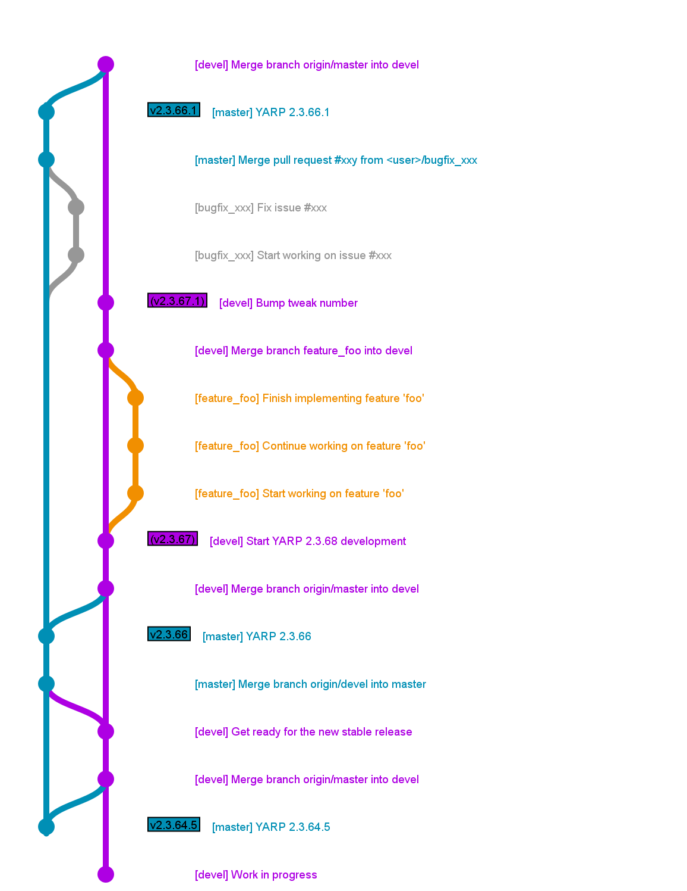

|
YARP
Yet Another Robot Platform
|


|
|
YARP
Yet Another Robot Platform
|
|
Table of Contents
This is the recommended code style for YARP.
#pragma once, use instead #ifndef ... #define ... #endif macro.YARP_<LIB>_<FILENAME_H> i.e. YARP_OS_FOO_HYARP_<LIB>_IMPL_<FILENAME_H> i.e. YARP_OS_IMPL_FOO_HYARP_<NAME>_<CARRIER/DEVICE>_FILENAME_H i.e. YARP_HUMAN_CARRIER_HUMANSTREAM_H andYARP_FAKEBOT_DEVICE_FAKEBOT_HYARP_<NAME>_FILENAME_H i.e. YARP_YARP_YARPROBOT_H and YARP_YARPMANAGER_QT_YSCOPEWINDOW_H#endif containing the closed #ifndef.Example:
if instead of IFif() instead of if ()if(FOO) ... else() ... endif() instead of if(FOO) ... else(FOO) ... endif(FOO)git pull. Always pull --rebase.qgit, gitg, gitk)rebase -i and amend to rewrite your local history and keep it clean.master and devel branches unless there is a very good reason to do itThe master branch is stable and should not receive new features. Only bug fixes are accepted.
This is the typical workflow to fix a bug in the master branch.
master branch:master branch, now you need to port it to the devel branch.origin:As final note, in case you need to start a PR but you deem it still work-in-progress and don't want anyone to merge it by mistake, do the following:
[WIP] at the beginning of the PR title."Status: In Progress".Once you're happy about your work, just remove the [WIP] tag as well as the label, and drop a message within the PR to notify the community that reviews are welcome and merging is now possible.
We use the branch devel to collect the ongoing work, which is given in terms of new features and bug fixes.
When we introduce a new feature that will cause downstream projects to be aware of such update, we do increase the tweak number (always sticking to odd numbers).
When we decide to publish these new features in a new software release (roughly each 3 months), we merge the new modifications into master, doing:
This is an example of workflow involving:
bugfix_xxx branch (gray) and later merged on the master branch (blue).master branch:feature_foo branch (orange) and later merged in the devel branch (purple).devel branch:find_package(YARP 2.3.67.1 REQUIRED))
master), and an odd number for unstable releases (tagged in devel).Deprecated methods, features, classes, and tools are marked as deprecated instead of removed. This will generate a warning when using these from other projects, or an error if YARP is built with YARP_NO_DEPRECATED
No bugfixes or new features will be added to these, unless it is absolutely necessary for some reason.
Deprecated features are definitely removed in the following major release, with the exception of the features removed during the development between the last minor release and the new major release, that are kept until the following major release, in order to simplify as much as possible the migration. During this period, it is also allowed to do breaking changes that cannot be deprecated using the YARP_DEPRECATED methods.
 1.8.20
1.8.20